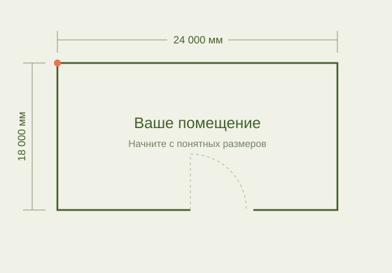

Сохраняйте темп
разговора с клиентом
Покажите вариант, пока клиент на связи. Уточняйте решение сразу, без паузы на передачу простой задачи проектировщику.
RackSketch для компаний, которые продают стеллажи
Менеджер готовит типовую схему.
Инженер решает сложные задачи.
RackSketch помогает менеджеру быстро собрать и изменить рабочую схему расстановки стеллажей вместе с клиентом — без освоения полноценной CAD-системы.
30 дней бесплатно · без регистрации · Windows 10/11 x64
Фронтальный вид · Ряд 02
Что получает бизнес
Типовой запрос не должен ждать, пока проектировщик закончит большой проект. Менеджер может подготовить расстановку сам.
Покажите вариант, пока клиент на связи. Уточняйте решение сразу, без паузы на передачу простой задачи проектировщику.
Менеджер ведёт и схему, и обсуждение. Меньше передач между отделами, повторных объяснений и участия двух специалистов в простой задаче.
Типовые расстановки остаются в продажах. Инженер занимается нестандартными решениями, расчётами и проектной документацией.
Согласуйте компоновку и переходите к комплектации и расчёту стоимости. Готовая схема становится основой дальнейшей коммерческой работы.
01 Менеджеру легко начать
Знакомая задача. Только нужные для неё инструменты.
Менеджер работает с помещением, рядами и секциями. Задаёт размеры, выбирает стеллажи и меняет параметры — в интерфейсе, построенном вокруг расстановки.
AutoCAD — универсальный профессиональный инструмент. RackSketch сосредоточен на одной задаче: быстро подготовить понятную схему стеллажей.

02 В процессе продажи
Покажите первый вариант, обсудите правки и согласуйте расстановку. Типовые изменения менеджер вносит сам; нестандартные задачи передаёт проектировщику.
«Нужно расширить
проход.»
Измените вариант и продолжайте обсуждение.
Уточните помещение
и задачу клиента.
Соберите типовой вариант
силами менеджера.
Обсудите и внесите
изменения вместе.
Переходите к комплектации
и расчёту стоимости.
03 За счёт чего это работает
Инструменты сгруппированы вокруг работы с запросом: собрать схему, уточнить вариант и показать результат клиенту.
План помещения, стены, двери и ворота — контекст, в котором нужно разместить оборудование.
Паллетные и среднегрузовые стеллажи, одиночные и спаренные ряды. Точное перемещение, размеры и расстояния, чистый проход, отступы от стен и привязки помогают задать нужное положение.
План и фронтальный вид показывают размещение, секции и уровни хранения. Схему можно передать клиенту в PDF для обсуждения и согласования.
Меняйте расстановку по ходу обсуждения, сохраняйте проекты и возвращайтесь к ним, чтобы продолжить работу, сравнить варианты и согласовать решение с клиентом.
План и фронтальный вид помогают обсуждать одно решение с разных сторон.
В большинстве типовых задач схема может быть готовым результатом для обсуждения, согласования, расчёта комплектации и подготовки коммерческого предложения.
Расчёт несущей способности, другие инженерные расчёты и проектная документация остаются задачами специалистов. Для сложных нестандартных проектов может потребоваться CAD.
Для компаний, которые продают стеллажи
Поставщикам стеллажей и складского оборудования, у которых продажи и проектирование работают над общими запросами.
Сократить участие проектного отдела в типовых запросах и использовать время специалистов там, где оно нужнее.
Дать менеджерам инструмент для быстрого ответа, подготовки вариантов и предметного разговора с клиентом.
Передать простые расстановки в продажи, сохранив за инженерами сложные решения и расчёты.
Самостоятельно собрать и изменить типовую схему, не осваивая полноценную CAD-систему.
Оцените на задачах своей компании
Возьмите типовой запрос клиента и покажите RackSketch менеджеру. Оцените, какую расстановку он сможет подготовить сам, а где по-прежнему нужен проектировщик.
На странице — интерактивная концепция интерфейса.
Выберите ряд и переключите план / фронтальный вид.
Попробуйте на своём проекте
30 дней полного функционала. Без регистрации и банковской карты. Пробный период начинается при первом запуске программы. После его окончания проекты остаются доступны для просмотра.
30 дней с первого запуска RackSketch.
Нет. Регистрация и банковская карта не требуются.
Пилотный установщик пока не имеет цифровой подписи. Windows SmartScreen может показать предупреждение. Если вы скачали его с racksketch.ru, выберите «Подробнее» → «Выполнить в любом случае».